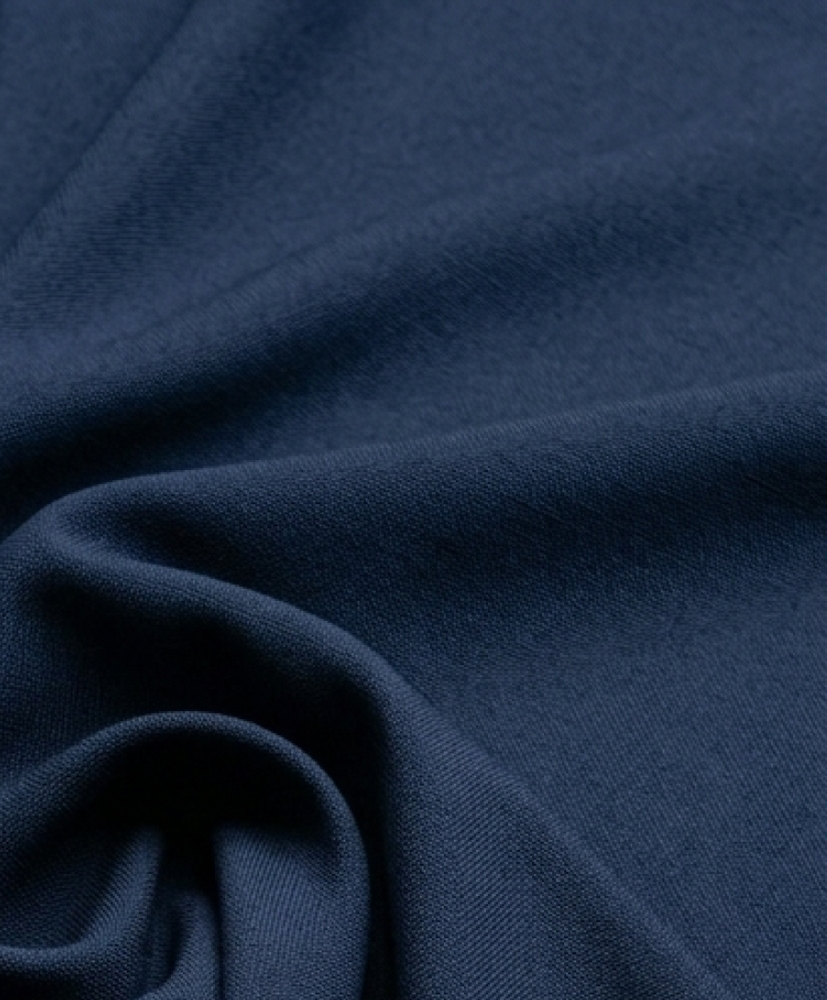

1996—
Years of making fabric.
With more than 30 years of knitting experience,
we carefully review fabric construction and production conditions
to find the fabric you need.
Hwoasung Textile knits and supplies fabrics in Yeoncheon, Korea. Drawing on experience since 1996, we review the fabric and production conditions you need.
Discover Hwoasung HWOASUNG TEXTILE · YEONCHEON
HWOASUNG TEXTILE · YEONCHEONWorking with filament, DTY and T/R yarns,
we make polar fleece, interlock and single-knit fabrics.




With more than 30 years of knitting experience,
we carefully review fabric construction and production conditions
to find the fabric you need.
We prepare the fabrics you need to keep production moving.
We aim to be a fabric supplier you can rely on for the long term.
We source yarn and knit fabric ourselves,
preparing greige and finished fabric.
Explore how we produce and supply fabrics.

Cheongsan-myeon, Yeoncheon-gun, Gyeonggi-do
441 Jeonyeong-ro, Hwoasung Textile
We would be glad to discuss your requirements.
Contact us about fabric